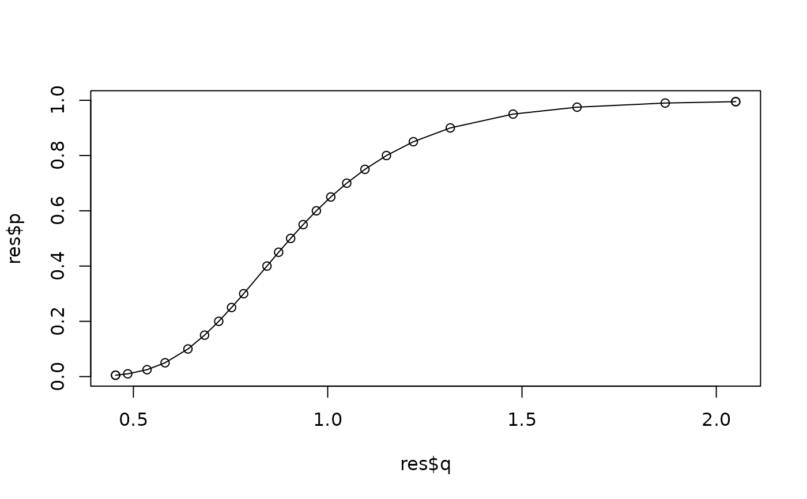

Quantiles of a test statistic
qStat.RdQuantile of a test statistic.
Usage
qStat(p, n,
type = c("Greenwood", "Jackson", "logLRGPD", "logLRLomax",
"logLRGEV", "logLRFrechet"),
outNorm = FALSE)Arguments
- p
-
Numeric vector of probabilities. Very small values (
p < 0.01) or very large ones (p > 0.99) will be truncated as0.00or1.00to maintain a realistic level of precision. - n
-
Sample size.
- type
-
The type of statistic, see Details.
- outNorm
-
Logical. If
TRUEthe output is normalized in a such fashion that its distribution is the asymptotic one (i.e. standard normal in practice). WhenFALSE, the quantiles are given in the true scale of the statistic: \(\textrm{CV}^2\), Jackson. For LR statistics this argument has no impact.
Details
The function provides an approximation of the distribution for several statistics.
For
"Greenwood", the statistic is Greenwood's statistic. The distribution is that of the squared coefficient of variation \(\textrm{CV}^2\) of a sample of sizenfrom the exponential distribution as computed byCV2.For
"Jackson", the statistic is Jackson's statistic, seeJackson.For
"logLRGPD"and"logLRLomax", the statistic is the log of the likelihood ratio of a sample from the exponential distribution. The log-likelihoods are for an exponential distribution compared to a GPD with non-zero shape, or to a GPD with positive shape (equivalently, a Lomax distribution).For
"logLRGEV"and"logLRFrechet", the statistic is the log of the likelihood ratio of a sample from the Gumbel distribution. The log-likelihoods are for a Gumbel distribution compared to a GEV with non-zero shape, or to a GEV with positive shape (equivalently, a Fréchet distribution).
The log of Likelihood Ratios are multiplied by 2, so that they
compare to a chi-square statistic with one degree of freedom.
Note
The precision of the result given is limited, and is about two-digits. This function is not intended to be used as such and is only provided for information.
Examples
res <- qStat(n = 40, type = "Greenwood")
#> Warning: 'p' contains values smaller than 0.005. Truncated.
#> Warning: 'p' contains values larger than 0.995. Truncated.
plot(res$q, res$p, type = "o")
